Foro 7 Producciones llega a Nuevo Vallarta con más de 15 años de experiencia en fotografía y video de bodas, XV años y sesiones. Video 4K, dron y fotolibros hechos en casa.
Cotizar mi fecha Ver paquetesLos escenarios más espectaculares del Pacífico mexicano para tu boda, XV años o sesión.
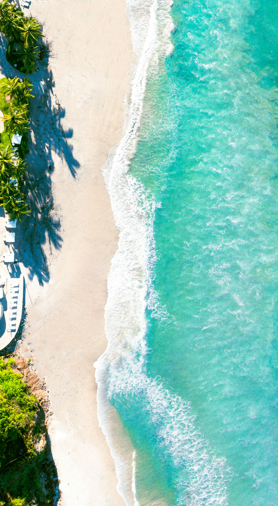
Villas privadas y resorts cinco estrellas frente al Pacífico
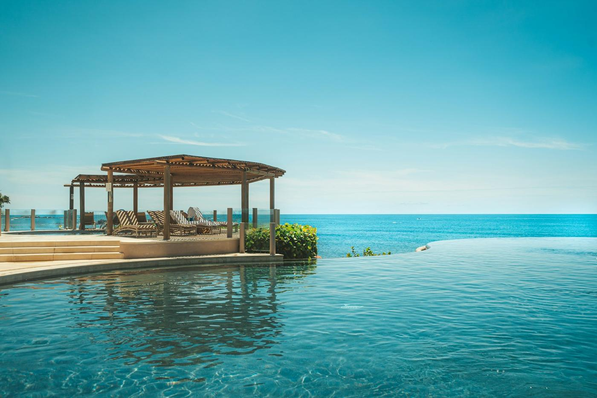
Ceremonias con el mar como altar
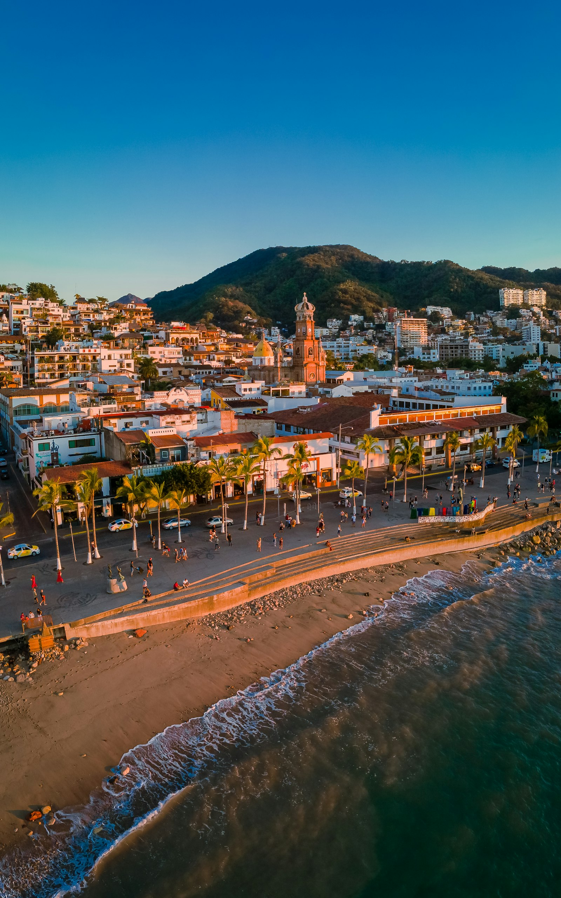
Tomas aéreas con dron frente a la bahía
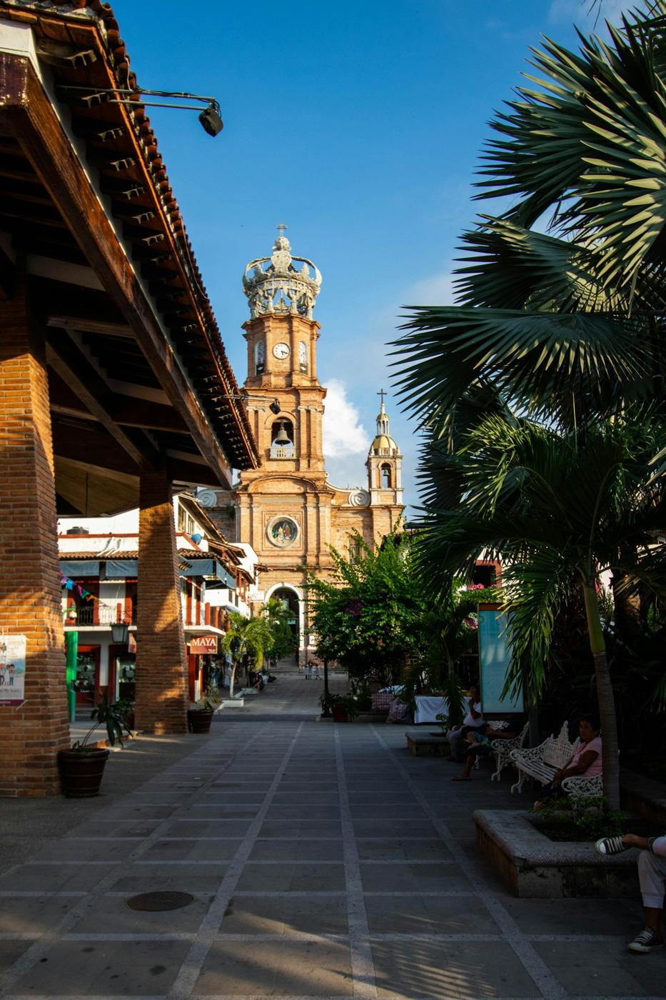
El corazón del centro histórico para bodas religiosas y sesiones
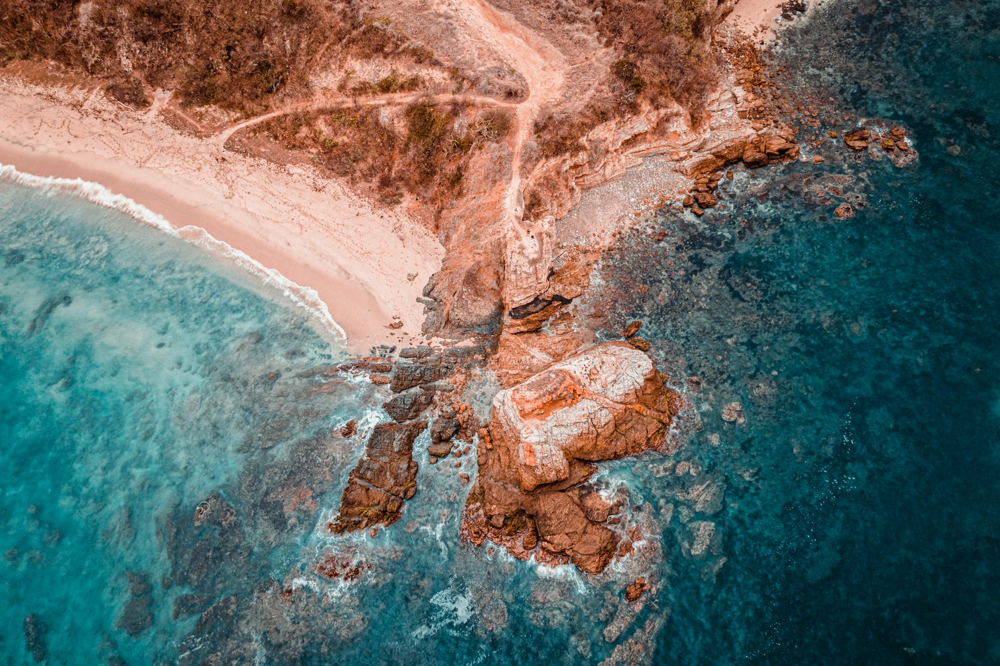
Acantilados y aguas turquesa
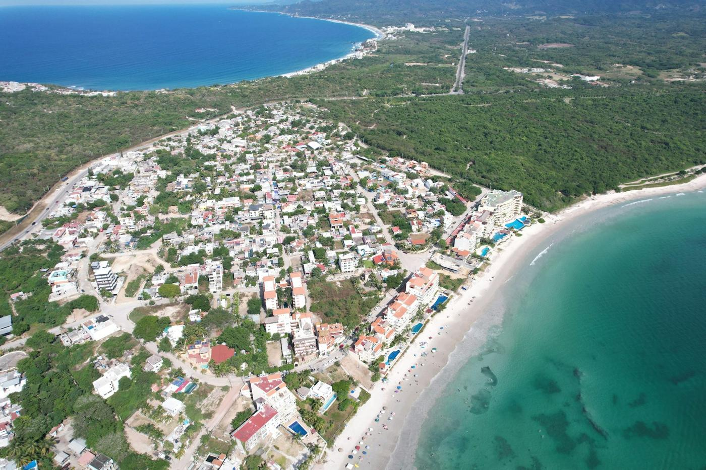
Sayulita, San Pancho y La Cruz: color y bohemia
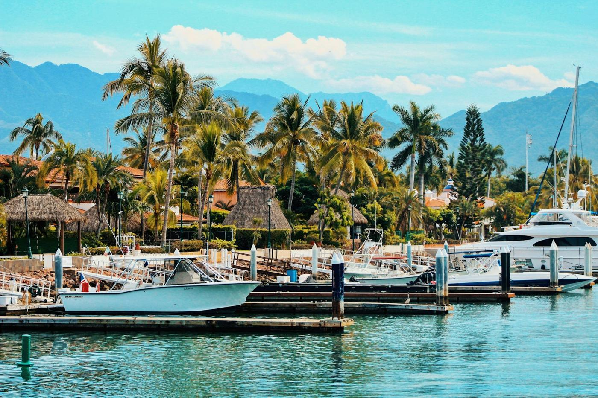
Yates y atardeceres para sesiones de lujo
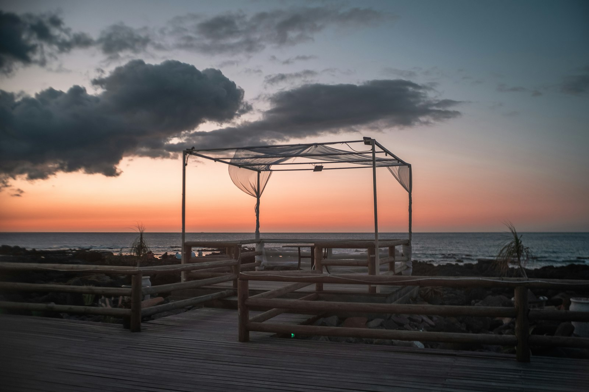
Pérgolas y montajes al atardecer
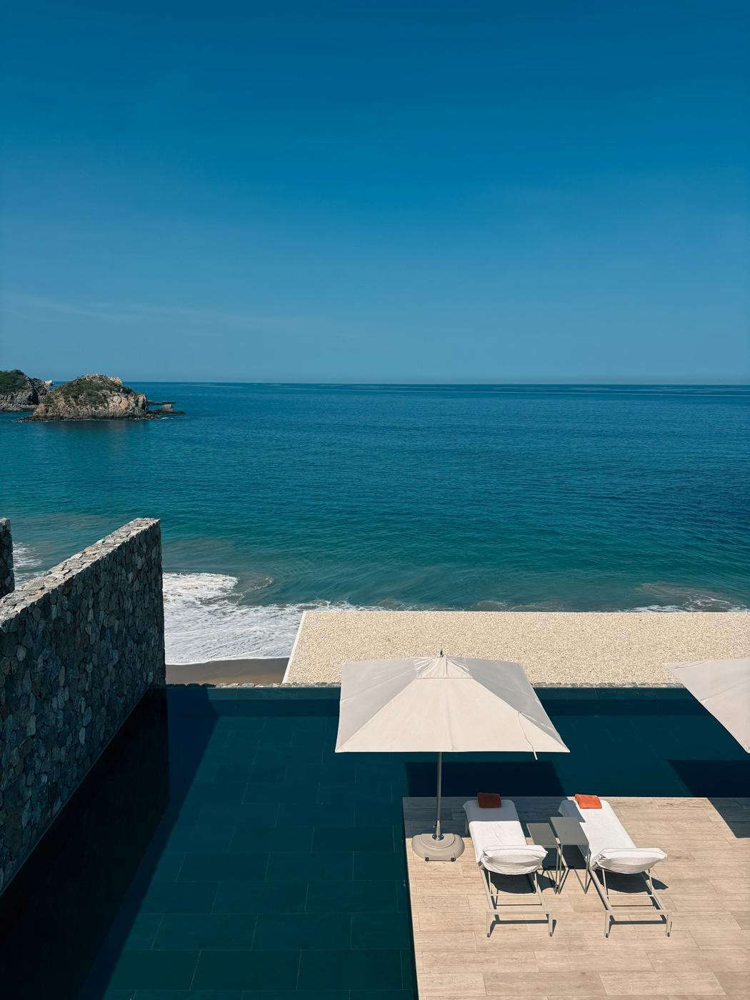
Grand Velas, Mayan Palace, Four Seasons y más
Fotografía y video trabajando juntos. Todos incluyen edición profesional y galería en línea para compartir con sus invitados.
Precios sujetos a disponibilidad de fecha y locación. Apartas con 30% de anticipo.
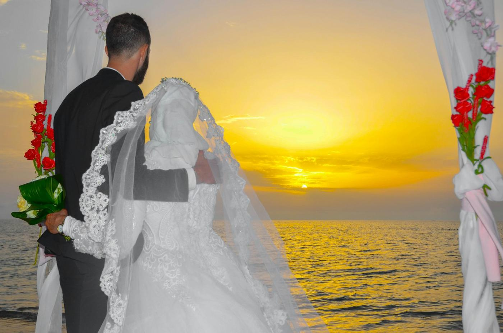
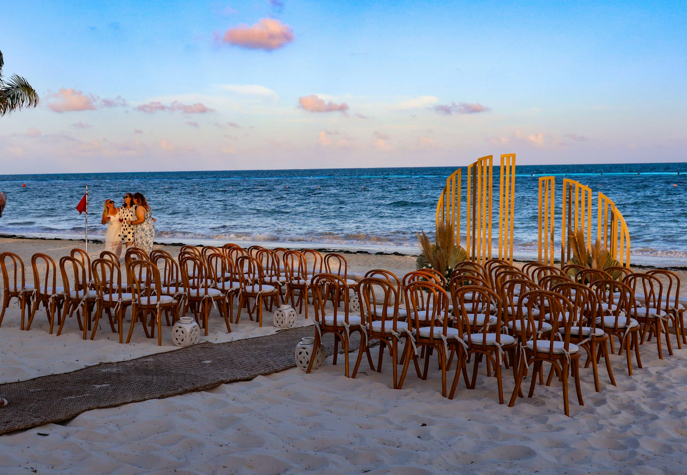
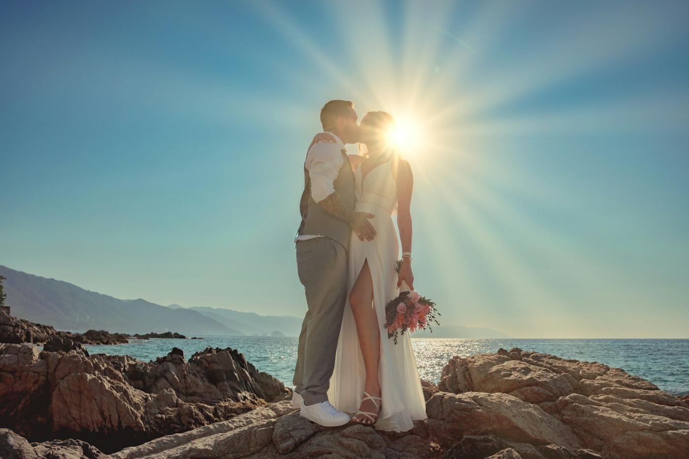
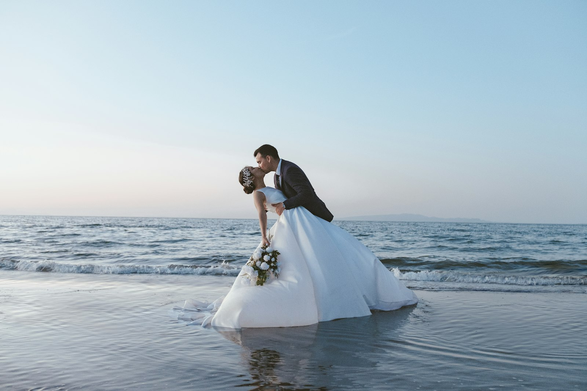
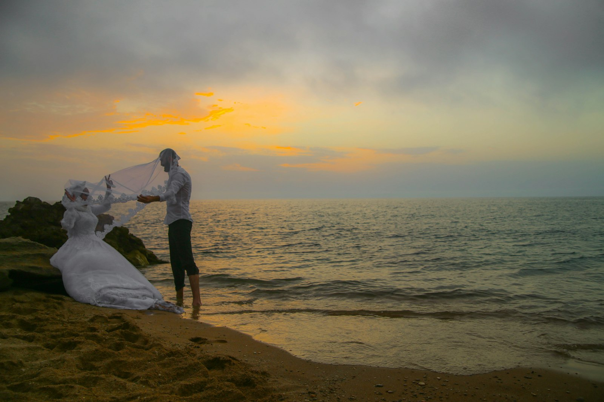
Imágenes ilustrativas de la Riviera Nayarit (Unsplash). Portafolio propio de la sucursal próximamente.
Sí. Coordinamos con el wedding planner del hotel; algunos resorts cobran cuota de proveedor externo, te ayudamos a revisarlo.
Sí, atendemos en español e inglés y aceptamos pagos en MXN o USD.
Avance en 72 horas, galería completa en 4–6 semanas y video en 6–8 semanas.
La hora dorada antes del atardecer. Te ayudamos a planear la ceremonia para aprovecharla.